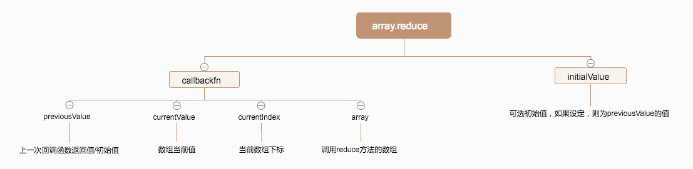

Reduce
reduce() 方法接收一个函数作为累加器，数组中的每个值（从左到右）开始缩减，最终为一个值，是ES5中新增的又一个数组逐项处理方法
语法
arr.reduce(callback[, initialValue])
参数图解

原理实现
Array.prototype.myReduce = function(callbackFn,initialValue){
let self = this;
let len = self.length;
let index = 0;
let accumulator = undefined;
if(typeof callbackFn !== 'function'){
throw new TypeError(callbackFn +'is not a function');
}
if(arguments.length<2 && len === 0 ){
throw new TypeError('Reduce of empty array with no initial value');
}
initialValue = initialValue || undefined;
if(arguments.length > 1){
accumulator = initialValue;
}else{
accumulator = self[0];
}
while(index<len){
if(self.hasOwnProperty(index)){
let val = self[index];
accumulator = callbackFn.apply(null,[accumulator,val,index,self]);
}
index++;
}
return accumulator;
}
|
测试
const rReduce = ['1', null, undefined, , 3, 4].reduce((a, b) => a + b, 3);
const mReduce = ['1', null, undefined, , 3, 4].myReduce((a, b) => a + b, 3);
console.log(rReduce, mReduce);
|
isArray
Array.isArray() 用于确定传递的值是否是一个 Array。
Array.myIsArray = function(target){
return Object.prototype.toString.call(target) === '[object Array]';
}
console.log(Array.myIsArray([]))
console.log(Array.myIsArray({}))
|
完~
参考